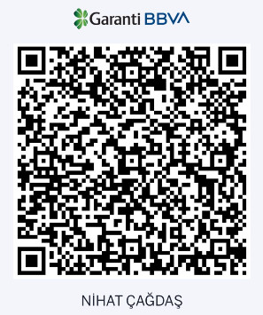

Bağış
Bir fincan kahve kadar küçük, bir gece uykusu kadar değerli.
Uykucu'yu Ayakta Tutan Sensin
Uykucu, ilk günden beri tamamen ücretsiz ve reklamsız olarak hizmet veriyor. Amacımız basit: herkesin huzurlu bir uyku hak ettiğine inanıyoruz. Ancak bir projeyi sevgiyle yapmak, onu sürdürebilmek için yeterli olmuyor — sunucu maliyetleri, alan adı, geliştirme saatleri ve yeni özellikler ekleme süreci hep devam ediyor.
Eğer Uykucu sana veya bebeğine huzurlu bir gece yaşattıysa, eğer zor bir günün sonunda seni rahatlattıysa, bunu bilmek bile bizim için çok değerli. Ama bir adım daha ileri gitmek istersen, küçük bir bağışla bu projenin devam etmesine katkıda bulunabilirsin.
Her bağış, ne kadar küçük olursa olsun, bize şunu söylüyor: "Devam et, bu proje birileri için bir şey ifade ediyor." Ve bu motivasyon, dünyadaki en güçlü yakıt.
QR Kod ile Bağış Yap
Aşağıdaki QR kodu banka uygulamanızla tarayarak doğrudan bağış yapabilirsiniz:

Bağışınız Nereye Gidiyor?
Bağış yapsan da yapmasan da, Uykucu her zaman ücretsiz kalacak.
Seni burada görmek bile bizi mutlu ediyor.
İyi geceler ve huzurlu uykular dileriz.
Diğer Destekleme Yolları
Maddi bağış dışında da bize destek olabilirsin:
Uykucu'yu arkadaşlarınla paylaş, sosyal medyada bahset, veya iletişim sayfamızdan önerilerini ve geri bildirimlerini ilet. Her türlü destek bizi ileri taşıyor.